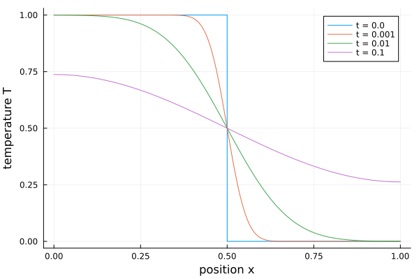
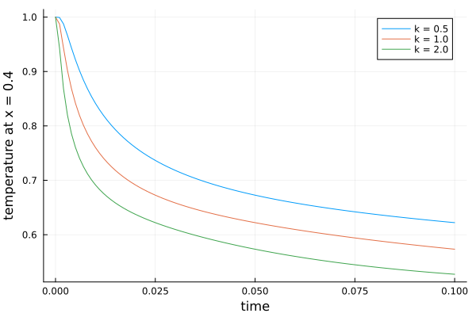
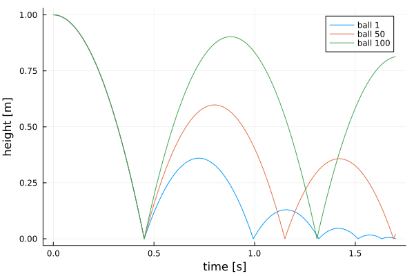

Large array models
translate and simulate keep a model's arrays: the frontend keeps array variables, for-equations and array equations, and the backend generates code that keeps the loops. Translating and simulating take about as long for 10 000 elements as for 10; scalarized, an array of 10 000 components becomes 10 000 copies of every variable and equation, and the generated code grows with them.
A model the array code generation does not handle (see What is kept) is flattened again with scalarization (the reason is logged) and simulates through ModelingToolkit as before. To scalarize from the start:
OM.simulate("Rod", "Rod.mo"; scalarize = true) # one call
OM.SCALARIZE[] = true # or for all later callsHeat conduction in a rod
A rod split into n segments: each segment stores heat, each conductor passes it on to the next. The left half starts hot.
connector HeatPort
Real T "Temperature";
flow Real Q "Heat flow";
end HeatPort;
model Segment "A slice of the rod: heat capacity C"
parameter Real C = 1;
parameter Real T0 = 0;
HeatPort p;
Real T(start = T0, fixed = true);
equation
T = p.T;
C * der(T) = p.Q;
end Segment;
model Conductor "Conduction G between two slices"
parameter Real G = 1;
HeatPort a, b;
equation
a.Q + b.Q = 0;
a.Q = G * (a.T - b.T);
end Conductor;
model Rod "Heat conduction in a rod of n segments, hot left half"
parameter Integer n = 10000 "Number of segments";
parameter Real L = 1 "Length";
parameter Real k = 1 "Thermal diffusivity";
parameter Real dx = L / n;
Segment s[n](each C = dx, T0 = {if i <= n / 2 then 1.0 else 0.0 for i in 1:n});
Conductor c[n - 1](each G = k / dx);
equation
for i in 1:n - 1 loop
connect(s[i].p, c[i].a);
connect(c[i].b, s[i + 1].p);
end for;
end Rod;using OM, Plots
sol = OM.simulate("Rod", "Rod.mo"; stopTime = 0.1)
x = ((1:10000) .- 0.5) ./ 10000
p = plot(; xlabel = "position x", ylabel = "temperature T")
for t in (0.0, 0.001, 0.01, 0.1)
plot!(p, x, sol(t); label = "t = $t")
end
p
The model has 10 000 states and 60 000 algebraic variables (the connector temperatures and heat flows). The generated code is 11 loops, the same for any n, and translating and simulating it take under two seconds together. With 1 000 segments the same model takes 0.4 s with its arrays kept and 7.6 s scalarized (scalarize = true), with the same result. (Times of a second run in a Julia session; the first run also compiles.)
Variables are read by their Modelica names, states and algebraic variables alike:
OM.OMBackend.getVariableValues(sol, "s[5000].T")
sol(0.05; idxs = Symbol("c[1].a.Q"))Changing parameters
Parameters are passed to the generated code as data, so every parameter can be changed in resimulate without translating again, also single elements of parameter arrays ("s[3].C"). Parameters whose bindings use a changed one follow it: the conductances G = k / dx below.
p = plot(; xlabel = "time", ylabel = "temperature at x = 0.4")
for k in (0.5, 1.0, 2.0)
s = OM.resimulate("Rod"; stopTime = 0.1, saveat = 0.001, parameters = Dict("k" => k))
plot!(p, s.t, OM.OMBackend.getVariableValues(s, "s[4000].T"); label = "k = $k")
end
p
Parameters that fix the structure, such as n here (array sizes, subscripts), need a new translation.
A hundred bouncing balls (events)
A when-equation inside a for-loop: each ball has its own coefficient of restitution and counts its bounces in a discrete variable. The array path handles the events as OpenModelica does: relations with a hysteresis, event iteration in sweeps, pre() of the values before a sweep, reinit() after it.
model BouncingBalls "n balls, each with its own coefficient of restitution"
parameter Integer n = 100;
parameter Real g = 9.81;
parameter Real e[n] = {0.6 + 0.35 * (i - 1) / (n - 1) for i in 1:n};
Real h[n](each start = 1.0, each fixed = true) "Heights";
Real v[n](each start = 0.0, each fixed = true) "Velocities";
discrete Integer bounces[n](each start = 0);
equation
for i in 1:n loop
der(h[i]) = v[i];
der(v[i]) = -g;
when h[i] <= 0.0 then
reinit(v[i], -e[i] * pre(v[i]));
bounces[i] = pre(bounces[i]) + 1;
end when;
end for;
end BouncingBalls;sol = OM.simulate("BouncingBalls", "BouncingBalls.mo"; stopTime = 1.7, saveat = 0.002)
p = plot(; xlabel = "time [s]", ylabel = "height [m]")
for i in (1, 50, 100)
plot!(p, sol.t, OM.OMBackend.getVariableValues(sol, "h[$i]"); label = "ball $i")
end
p
sol(1.7; idxs = Symbol("bounces[1]")) # 5.0
This takes under a second; through the ModelingToolkit path (scalarize = true) the hundred when-equations take about 35 s to translate and simulate, with the same heights.
What is kept
The array code generation takes a model when every equation can be solved for one unknown (a state derivative, an algebraic or a discrete variable) without an algebraic loop or index reduction. That covers:
- equations from connections, for-loops, array equations (
der(x) = -k .* x,der(x) = A * x), declaration bindings, if-equations whose conditions depend on loop indices and parameters, algorithm sections, reductions (sum,product), the built-in math functions (also asModelica.Math.sinand the like); - events: relations on continuous variables,
when-equations and when-statements (also in for-loops, with vector conditionswhen {a, b}),reinit,pre,edge,change,initial(),sample,noEvent,smooth,homotopy, and the event-generating functionsinteger,floor,ceil,div,mod,rem; - initialization: initial equations,
fixedstarts of variables that are no states, parameters withfixed = false, initial algorithms that set discrete variables; - asserts, reported where the condition fails, with messages formatted as OpenModelica (
String(x, significantDigits = 3), ...).
Not yet: algebraic loops, index reduction, calls of Modelica functions (other than the built-in ones), record variables (Complex, MultiBody frames, media states), elsewhen in when-equations and array slices. Such a model, and every model translated inside OMBackend.withTunableParameters, is flattened again with scalarization and simulated as with scalarize = true. OMBackend.ARRAY_PATH_FULL[] = false limits the array path to models without events and initialization.